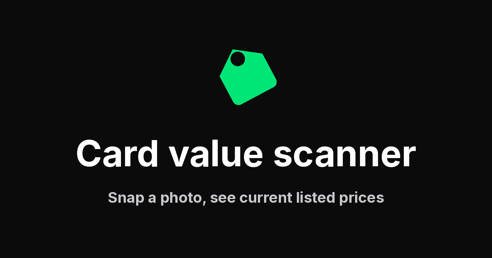

A card value scanner should do one job well: tell you which card you actually have, then tell you what that exact card is selling for. Anyone who has sorted a binder knows the problem. The same player or the same Pokémon turns up on a dozen different cards, and only one or two of them are the money card. Typing the name into a search box gives you an average of the wrong cards.
That is why a photo works better than a name. A good card value scanner reads the set, the card number, and the print from the picture, lets you set the condition, and only then shows a price range from current listings.  How Much Is It Worth: Scanner does this for Pokémon, sports cards, Yu-Gi-Oh, and Magic: The Gathering, plus most other trading cards that have public listings.
How Much Is It Worth: Scanner does this for Pokémon, sports cards, Yu-Gi-Oh, and Magic: The Gathering, plus most other trading cards that have public listings.
Before any number means anything, the scanner has to pin down the details that split one card name into many markets:
Parallels can look alike in a photo. So the scanner shows you what it thinks the card is, and you confirm or correct it before anything is priced. That step is not a formality. It is the step that stops you pricing a base card as a numbered parallel, or the other way round.
A wide listed range comes with a lower confidence level. That usually means the listings mix played copies, near mint copies, graded copies, and hopeful sellers. When you see that, set the condition honestly and open the listings to see where your card really sits, rather than grabbing the top number. If there are too few listings, the result is labelled as a rough estimate. The scanner will not invent a precise figure, and it is not a certified appraisal or an offer to buy.
Want to try it? Start your free 3-day trial in the iPhone app at https://apps.apple.com/app/id6832980231. You get one free scan on the website at https://howmuchisitworth.today/card-value-scanner. On Android? Check https://howmuchisitworth.today/ for the Android release.
People ask this after almost every good scan. The honest rule is simple. Grading only makes sense if the card's value at a high grade clears the grading fee, the shipping, and the wait by a decent margin, and you are confident about the centering and the surface. Scan the card raw first. Then look at listings for the same card in graded slabs. If the gap is small, sell it raw.
When you photograph a slab, the label matters more than the card. Shoot the certificate number and the grade so they are sharp, and leave the slab closed. For raw cards, shoot the front, the back, and close-ups of any corner or edge wear. Hidden creases and trimmed edges are the risks buyers worry about on raw cards. On slabs, the worry is fake slabs and swapped labels on big cards.
If a card is famous, it is faked. Be wary of a glossy surface on a card that should be matte, wrong fonts, blurry symbols, missing texture on modern textured cards, and backs that look too blue or too purple. A scan helps you find genuine listings to compare against. It is not an authentication service, and no scanner can authenticate a card from a photo. For a high-value card, get it checked by a grading company before you sell.
The scanner does not grade your card either. It reads condition from the photo as a starting point, and you can change it. An official grade only comes from a grading company.
In the app, every card you scan saves to a collection with a running estimated total, so you can price a binder or a shoebox and see what the lot is worth. That is usually the moment people find out most of the box is bulk, and a handful of cards carry the value.
For cheaper cards, bundles and lots move faster than singles. For anything over a few dollars, list it as a single with clear photos of the front, back, and corners. The app drafts a listing for eBay, Facebook Marketplace, or Gumtree from your scan, so you are not typing out set numbers by hand.
The app is free to download. Start your free 3-day trial to scan in the app, or use one free scan on the website.
If you want to price the cards you actually have, start at https://howmuchisitworth.today/card-value-scanner, or download the app and Start your free 3-day trial.
I also wrote a Google Docs walkthrough of the same photo method: How Much Is It Worth: Scanner.